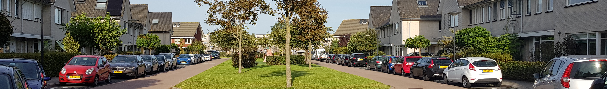
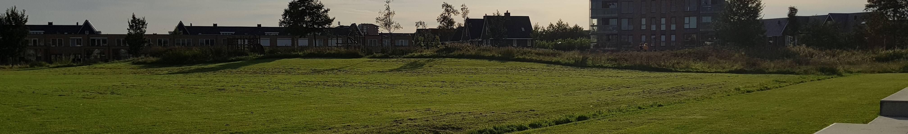

Een van de woonwijken in Beverwijk en Heemskerk is De Broekpolder. De Broekpolder is een mooie, rustige wijk met veel afwisselende soorten huizen en veel groen. Er zijn ook zeer veel parkeerplekken, daar is geen gebrek aan.
Tevens zijn er veel voorzieningen zoals een supermarkt, drogisterij, kapper, schoonheidssalon en een Primera met PostNL. Er is een gezondheidscentrum met huisartsen, tandarts, fysio, logopedie, en psychologen. Op het plein De Citadel is er een restaurant, kroeg, snackbar, pizzeria en een toko.
Voor de kinderen zijn er in de wijk vele speelplaatsen. Verder zijn er drie basisscholen: de Zeester, een openbare school; de Panta Rhei, een Christelijke school en de Bareel, een interconfessionele school. Ook is er nog naschoolse opvang en is er jeugdhulp in het gezondheidscentrum.

Er zijn verschillende soorten woningen in de Broekpolder, met allerlei verschillende architecturen. Zo zijn er twee identieke flats met koperen daken, twee-onder-een-kap woningen langs het water. De wijk bevat ook een heleboel verschillende soorten rijtjeshuizen met vaak een vrijstaand huis op de hoek. Vaak zijn er ook speeltuintjes te vinden tussen de blokken rijtjeshuizen.
Je zult ook zien dat er in verschillende delen van de wijk andere architecturen te zien zijn, zo zien de huizen in De Citadel er heel anders uit dan in de rest van de wijk.
In de buurt van de Broekpolder is er voor jong en oud genoeg te doen. Zo ligt op ongeveer 10 km het strand bij Wijk aan Zee. Een van de grootste attracties in de Broekpolder is De Bazaar, een grote oosterse markt die welk weekend geopend is.
Verder is er ook nog de Vuurlinie, waar je kan paintballen, laser gamen en er is een escape room. Het is ook ideaal voor kinderfeestjes.

Er is ook nog sportgelegenheid in de omgeving. Zo is er een atletiekbaan, zijn er meerdere voetbalvelden, er is ook nog een tennisbaan, een golfbaan, skicentrum, fitnesscenter en er zijn twee sporthallen.
Op 28 en 29 juni is er jaarlijks een zomerfestival in het park De Vlaskamp. Er is dan een kermis, live muziek, verschillende sport activiteiten en spelletjes voor kinderen. Verder is er van 4 tot 6 september een kermis in Heemskerk.